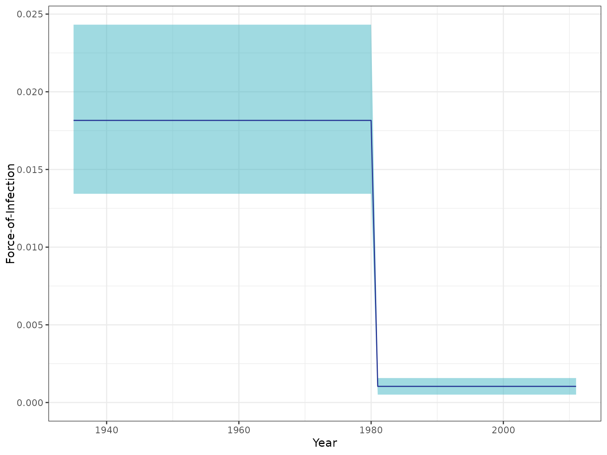

Plots force-of-infection central estimates
Usage
plot_foi_estimates(
seromodel,
serosurvey,
alpha = 0.05,
foi_df = NULL,
foi_max = NULL,
size_text = 11,
plot_constant = FALSE,
x_axis = NA
)Arguments
- seromodel
stan_fit object obtained from sampling a model with fit_seromode
- serosurvey
survey_yearYear in which the survey took place (only needed to plot time models)
age_minFloor value of the average between age_min and age_max
age_maxThe size of the sample
n_sampleNumber of samples for each age group
n_seropositiveNumber of positive samples for each age group
- alpha
1 - alpha indicates the credibility level to be used
- foi_df
Dataframe with columns
year/ageYear/Age (depending on the model)
foiForce-of-infection values by year/age
- foi_max
Max force-of-infection value for plotting
- size_text
Size of text for plotting (
base_sizein ggplot2)- plot_constant
boolean specifying whether to plot single FOI estimate and its corresponding rhat value instead of showing this information in the summary. Only relevant when
seromodel@model_name == "constant")- x_axis
either
"time"or"age". Specifies time axis values label for constant model additional plots. Only relevant when andseromodel@model_name == "constant"
Examples
data(chagas2012)
seromodel <- fit_seromodel(
serosurvey = chagas2012,
model_type = "time",
foi_index = data.frame(
year = 1935:2011,
foi_index = c(rep(1, 46), rep(2, 31))
),
iter = 100,
chains = 2
)
#>
#> SAMPLING FOR MODEL 'time_no_seroreversion' NOW (CHAIN 1).
#> Chain 1:
#> Chain 1: Gradient evaluation took 0.000407 seconds
#> Chain 1: 1000 transitions using 10 leapfrog steps per transition would take 4.07 seconds.
#> Chain 1: Adjust your expectations accordingly!
#> Chain 1:
#> Chain 1:
#> Chain 1: WARNING: There aren't enough warmup iterations to fit the
#> Chain 1: three stages of adaptation as currently configured.
#> Chain 1: Reducing each adaptation stage to 15%/75%/10% of
#> Chain 1: the given number of warmup iterations:
#> Chain 1: init_buffer = 7
#> Chain 1: adapt_window = 38
#> Chain 1: term_buffer = 5
#> Chain 1:
#> Chain 1: Iteration: 1 / 100 [ 1%] (Warmup)
#> Chain 1: Iteration: 10 / 100 [ 10%] (Warmup)
#> Chain 1: Iteration: 20 / 100 [ 20%] (Warmup)
#> Chain 1: Iteration: 30 / 100 [ 30%] (Warmup)
#> Chain 1: Iteration: 40 / 100 [ 40%] (Warmup)
#> Chain 1: Iteration: 50 / 100 [ 50%] (Warmup)
#> Chain 1: Iteration: 51 / 100 [ 51%] (Sampling)
#> Chain 1: Iteration: 60 / 100 [ 60%] (Sampling)
#> Chain 1: Iteration: 70 / 100 [ 70%] (Sampling)
#> Chain 1: Iteration: 80 / 100 [ 80%] (Sampling)
#> Chain 1: Iteration: 90 / 100 [ 90%] (Sampling)
#> Chain 1: Iteration: 100 / 100 [100%] (Sampling)
#> Chain 1:
#> Chain 1: Elapsed Time: 0.281 seconds (Warm-up)
#> Chain 1: 0.293 seconds (Sampling)
#> Chain 1: 0.574 seconds (Total)
#> Chain 1:
#>
#> SAMPLING FOR MODEL 'time_no_seroreversion' NOW (CHAIN 2).
#> Chain 2:
#> Chain 2: Gradient evaluation took 0.000414 seconds
#> Chain 2: 1000 transitions using 10 leapfrog steps per transition would take 4.14 seconds.
#> Chain 2: Adjust your expectations accordingly!
#> Chain 2:
#> Chain 2:
#> Chain 2: WARNING: There aren't enough warmup iterations to fit the
#> Chain 2: three stages of adaptation as currently configured.
#> Chain 2: Reducing each adaptation stage to 15%/75%/10% of
#> Chain 2: the given number of warmup iterations:
#> Chain 2: init_buffer = 7
#> Chain 2: adapt_window = 38
#> Chain 2: term_buffer = 5
#> Chain 2:
#> Chain 2: Iteration: 1 / 100 [ 1%] (Warmup)
#> Chain 2: Iteration: 10 / 100 [ 10%] (Warmup)
#> Chain 2: Iteration: 20 / 100 [ 20%] (Warmup)
#> Chain 2: Iteration: 30 / 100 [ 30%] (Warmup)
#> Chain 2: Iteration: 40 / 100 [ 40%] (Warmup)
#> Chain 2: Iteration: 50 / 100 [ 50%] (Warmup)
#> Chain 2: Iteration: 51 / 100 [ 51%] (Sampling)
#> Chain 2: Iteration: 60 / 100 [ 60%] (Sampling)
#> Chain 2: Iteration: 70 / 100 [ 70%] (Sampling)
#> Chain 2: Iteration: 80 / 100 [ 80%] (Sampling)
#> Chain 2: Iteration: 90 / 100 [ 90%] (Sampling)
#> Chain 2: Iteration: 100 / 100 [100%] (Sampling)
#> Chain 2:
#> Chain 2: Elapsed Time: 0.246 seconds (Warm-up)
#> Chain 2: 0.298 seconds (Sampling)
#> Chain 2: 0.544 seconds (Total)
#> Chain 2:
#> Warning: The largest R-hat is 1.13, indicating chains have not mixed.
#> Running the chains for more iterations may help. See
#> https://mc-stan.org/misc/warnings.html#r-hat
#> Warning: Bulk Effective Samples Size (ESS) is too low, indicating posterior means and medians may be unreliable.
#> Running the chains for more iterations may help. See
#> https://mc-stan.org/misc/warnings.html#bulk-ess
#> Warning: Tail Effective Samples Size (ESS) is too low, indicating posterior variances and tail quantiles may be unreliable.
#> Running the chains for more iterations may help. See
#> https://mc-stan.org/misc/warnings.html#tail-ess
plot_foi_estimates(seromodel, chagas2012)
